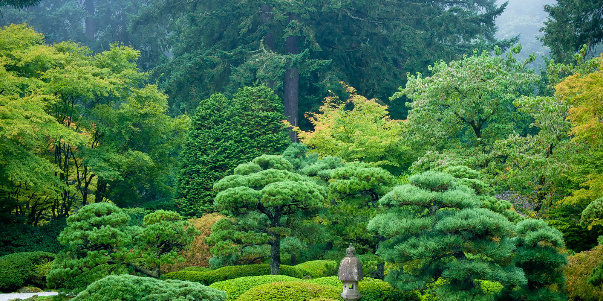
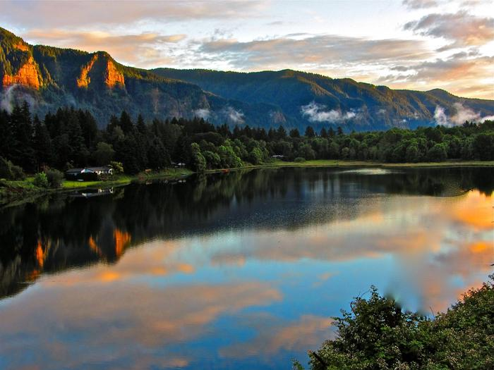
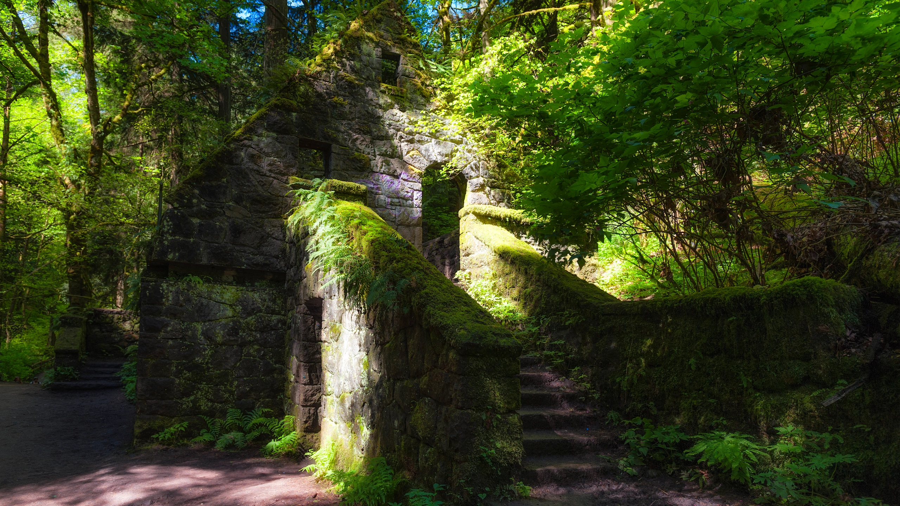
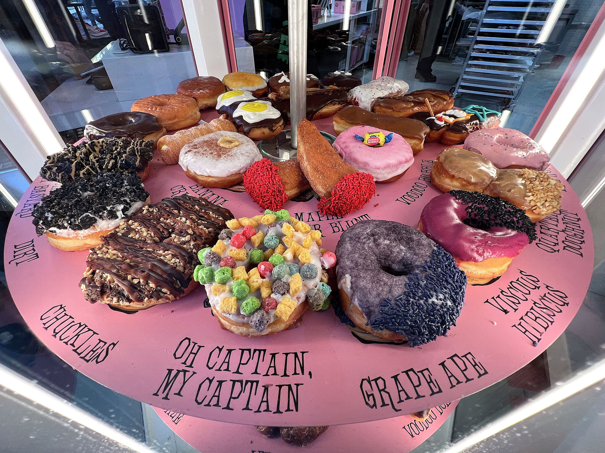
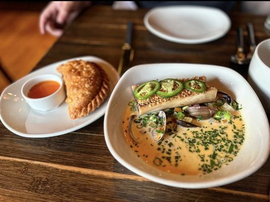
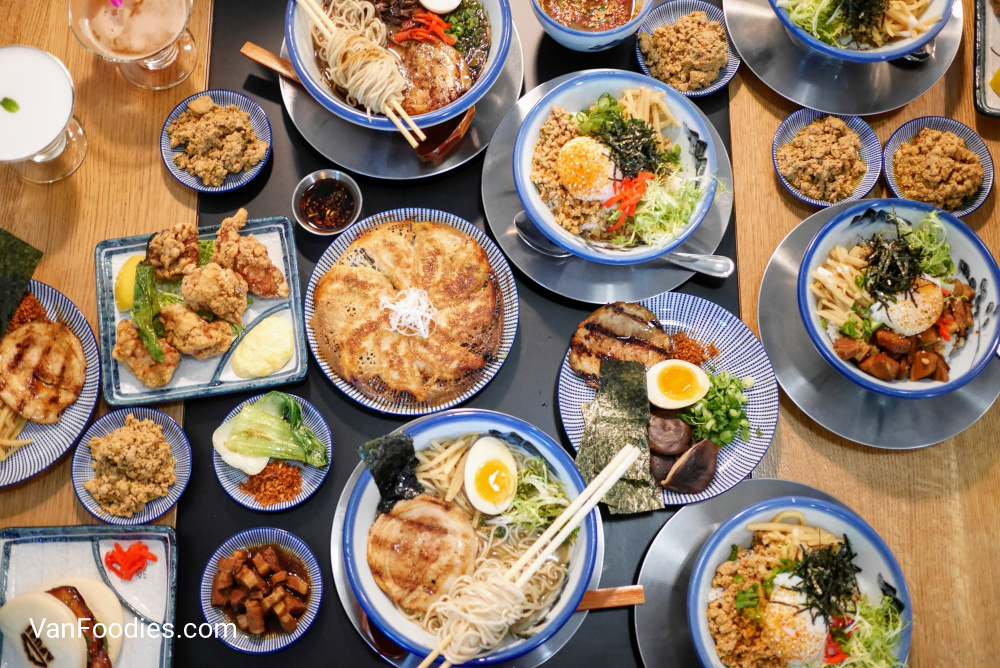

1: Portland Japanese Garden
|  | Encompassing 12 acres within Washington Park, Portland's Japanese Garden is located on the grounds of an old zoo. It was first opened to the public in 1961 and built to give the citizens of Portland a place to find serenity in their day and to recognize the growing cultural ties between Oregon and Japan. Both impressions remain today at the Japanese Garden, and the area is beautifully laid out in a variety of styles that offer a uniquely peaceful experience for visitors. |
|---|
2: Columbia River Gorge National Scenic Area
|  | The Columbia River marks the Oregon-Washington state border, and its entire length is a remarkable sightseeing region ideal for leisurely drives and enjoying the outdoors. The Columbia River Gorge National Scenic Area is one of the top day trip destinations from Portland, covering an immense 292,500 acres along the Pacific Northwest's largest river. The trip takes in locks, viewpoints, and hiking trails. |
|---|
3: Forest Park
|  | Forest Park flanks the west side of the city and provides more than 5,000 acres of Northwest forest to explore, providing an easy escape from the urban environment. It covers the eastern slope of the Tualatin Mountains and is one of the largest urban parks in the country. The park is easily accessible by car, bike, or public transportation. |
|---|
4: VOODOO DOUGHNUT
|  | Catapulted to almost instant fame in 2003, Voodoo Doughnut (not Voodoo Doughnuts or Voodoo Donuts) makes over 50 types of doughnuts daily. Their Bacon Maple Bar has an almost cult following—it’s definitely the most famous doughnut in Portland. |
|---|
5: FRESH CLAM CHOWDER WITH SMOKED MARROW BONE AT OX
Clam Chowder with Smoked Bone Marrow
|  | I’ve lost count of how many different clam chowders I’ve eaten in Oregon, but Ox’s is in a class all by itself. The name pretty much says it all: “Fresh Clam Chowder With Smoked Bone Marrow.” The flavorful, creamy broth is loaded with fresh in-shell clams and enhanced with smoked bone marrow and jalapeños. And to think we almost didn’t order it! Specializing in open-fire Argentine-style cooking, Ox has an amazing menu with so many incredible choices. But don’t skip the chowder. Luckily we dined with my best friend from cooking school who lives in Portland. She set us right. |
|---|
6: AFURI RAMEN + DUMPLING
|  | The first stateside spinoff of the original in Japan, Afuri crafts authentic ramens and dumplings in a no-nonsense atmosphere. If you love Japanese food, make a stop here! |
|---|